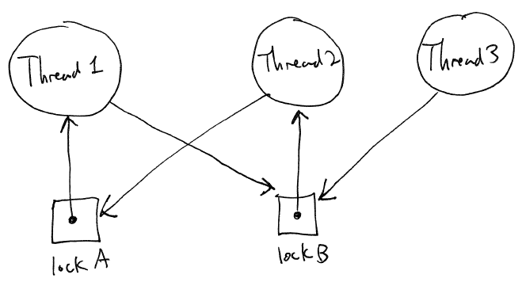
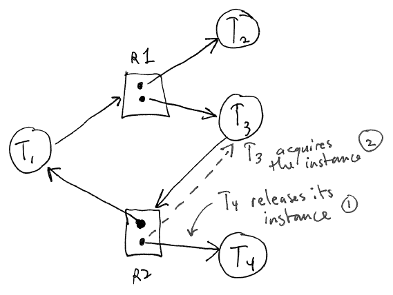
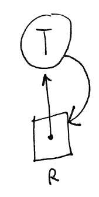

Implementation:
struct RW_Lock {
struct Mutex_Lock mutex;
struct Condition noWriters;
struct Condition noActiveWriter;
struct Condition noReaders;
int readers;
int writers;
bool writerActive;
};
void RW_Init(struct RW_Lock *rwLock)
{
Mutex_Init(&rwLock->mutex);
Cond_Init(&rwLock->noWriters);
Cond_Init(&rwLock->noWriterActive);
Cond_Init(&rwLock->noReaders);
rwLock->readers = 0;
rwLock->writers = 0;
rwLock->writerActive = false;
}
void RW_Lock_Read(struct RW_Lock *rwLock)
{
Mutex_Lock(&rwLock->mutex);
// Wait until there are no writers
while (rwLock->writers > 0) {
Cond_Wait(&rwLock->mutex, &rwLock->noWriters);
}
// Since there are no writers, we can proceed to read
rwLock->readers++;
Mutex_Unlock(&rwLock->mutex);
}
void RW_Unlock_Read(struct RW_Lock *rwLock)
{
Mutex_Lock(&rwLock->mutex);
rwLock->readers--;
// The last reader will signal that there are no readers,
// allowing any waiting writers to proceed
if (rwLock->readers == 0) {
Cond_Signal(&rwLock->noReaders);
}
Mutex_Unlock(&rwLock->mutex);
}
void RW_Lock_Write(struct RW_Lock *rwLock)
{
Mutex_Lock(&rwLock->mutex);
// Announce intent to write: keep out any new readers
rwLock->writers++;
// Wait for readers to finish
while (rwLock->readers > 0) {
Cond_Wait(&rwLock->mutex, &rwLock->noReaders);
}
// Wait for any active writer to finish
while (rwLock->writerActive) {
Cond_Wait(&rwLock->mutex, &rwLock->noWriterActive);
}
// Now this thread is the active writer
rwLock->writerActive = true;
Mutex_Unlock(&rwLock->mutex);
}
void RW_Unlock_Write(struct RW_Lock *rwLock)
{
Mutex_Lock(&rwLock->mutex);
rwLock->writerActive = false;
rwLock->writers--;
// If there are other writers waiting, let the next one take a turn.
// Otherwise, signal that there are no more writers, allowing any waiting readers
// to proceed.
if (rwLock->writers > 0) {
Cond_Signal(&rwLock->noWriterActive);
} else /* rwLock->writers == 0 */ {
Cond_Signal(&rwLock->noWriters);
}
Mutex_Unlock(&rwLock->mutex);
}
This implementation gives preference to writers because RW_Lock_Write() increments the writers count early: this serves as
a signal to any new readers that they will need to wait for waiting
writers to complete before they can gain read access to the lock.
Deadlocks can occur when mutliple threads acquire two or more locks.
Example:
Thread 1 Thread 2
-----------------------------------------------
mutex_lock(&lockA); mutex_lock(&lockB);
mutex_lock(&lockB); mutex_lock(&lockA);
Now envision the following interleaving:
Thread 1 acquires lockA
Thread 2 acquires lockB
Thread 1 attempts to acquire lockB: it
must wait because thread 2 has already locked it
Thread 2 attempts to acquire lockA: it
must wait because thread 1 has already acquired it
This is really bad: neither thread will ever be able to run again,
and neither will any other thread attempting to acquire lockA or lockB.
1. Mutual exclusion.
2. Hold and wait. [At least one process must be both holding
resource a waiting for another resource.]
3. No preemption. A thread cannot be forced to give up a
resource it is holding.
4. Circular wait
The resource allocation graph is an abstraction for describing
threads, resources, and deadlocks.
There are two distinct types of vertices
Process (thread) vertices
Resource vertices
An edge from a process vertex P to a resource vertex R means that P
is waiting to acquire R. This is a request edge.
An edge from a resource vertex R to a process vertex P means that P
has acquired R. This is an assignment
edge.
Note that each resource may have multiple instances, meaning that more than
one unit of the resource may be in use at once. (Like a
semaphore: if the initial count is > 1 then multiple threads may use
the semaphore at one time.)
Resource graph of our example [Silberschatz, pg. 251]:

Note that in this example, each resource (lockA and lockB) have only
one instance available.
Properties:
If the system is in a deadlock, there
will be a cycle in the resource allocation graph
If each resource has a single instance
(e.g., mutex locks), a cycle implies that there is a deadlock.
Any processes waiting for resources involved in the cycle are
deadlocked.
Note that if the cycle involves resources of which there are
multiple instances, then a cycle does not necessarily mean there is a
deadlock. Example [Silberschatz]:

Note that a single thread can create a deadlock if it tries to
acquire a single-instance resource it has already acquired:

For example, executing the following code
mutex lock;
void f() [
mutex_lock(&lock);
...
g();
...
mutex_unlock(&lock);
}
void g() {
mutex_lock(&lock);
...
mutex_unlock(&lock);
}
If the function f() is called, instant deadlock.
Deadlocks can affect any kind of software where multiple threads use
using locks to synchronize access to shared resources.
Operating system kernels: this is a big problem. A deadlock
can cause the entire system to freeze.
Multithreaded servers: the server can become unresponsive. The
deadlocked server can be killed and restarted, but this is not ideal.
It is not uncommon to use some kind of
watchdog program to monitor a server to periodically check to ensure
that it is still responsive.
Various strategies exist for handling deadlocks:
1. Use a protocol to ensure that a
deadlock can never occur. [Deadlock avoidance, deadlock
detection.]
2. Detect deadlocks at runtime, and
recover
3. Ignore the problem, hope that
deadlocks never occur
Option 1 (deadlock avoidance or detection) is probably the best-bet
for critical system software, such as an OS kernel.
Options 2 is common in database servers.
To prevent deadlock, we must make sure that at least one of the four
necessary conditions for deadlock does not occur.
1. Mutual exclusion.
Doesn't help us too much, since some resources can only be accessed
safely by a single thread.
2. Hold and wait. We
can address this prerequsiite for deadlock by ensuring that no process
holds more than one resource at a time. One way to accomplish
this is to protect all shared resources with a single lock (in essence,
creating a single shared resource). Easy, commonly used by early
versions of Unix and Linux (and still used by Windows). Not good
for scalability of multiprocessors.
3. No preemption.
Example: when a thread waits, it must release any locks it is currently
holding. The problem with this approach is locks are often used
to protect access to shared data structures; while holding the lock,
the data structure is very likely in an inconsistent state.
Releasing a lock guarding a data structure in an inconsistent state is
a really bad idea. (E.g., a linked list that has broken or
circular links.)
4. Circular wait.
This is the most commonly-used way of preventing deadlocks: ensure that
there can never be a cycle in the resource graph. This is done by
enforcing a global lock acquisition order which takes the form of
statements like "lockB can only be acquired after lockA, never
before". All threads must be written in a way that honors this
ordering.
The question is, how can this ordering be
enforced? What if programmers unintentionally violate it?
Two basic techniques:
1. Report any violations
dynamically. Each thread keeps track of which locks it has
acquired. Any violations of the global lock order are logged.
2. Verify the lock order
statically. In other words, analyze the source code of the
program, and construct a proof that it can never execute such that the
lock order is violated at runtime. This is a much stronger
guarantee: if the verification is successful, then we know that there
will never be deadlocks at runtime. Problem is that verification
is a hard problem, especially when locks may be created dynamically (so
we don't know the set of locks in advance.)
Threads must announce which locks they wish to acquire in advance.
Resource graph algorithm (for resources with a single instance):
A process must add a claim edge to the
resource graph before it can acquire the resource (converting the edge
into a request edge). All of the claim edges must be added at the
same time, in advance: once a thread has any request edges in the
resource graph, it cannot add any claim edges.
A claim edge can be converted into a
request edge at any time.
A request edge can be turned into an
assignment edge only if the resulting resource graph has no
cycles. A process attempting to turn a request edge into an
assignment edge must wait until it can do so without creating a cycle.
Note that the book claims that detecting
a cycle in a graph is O(n2), where n is the number of
processes.
This is not really accurate. It would be more correct to say that
cycle detection takes O(|V| + |E|) time, where |V| is the number of
vertices and |E| is the number of edges. It is true that |E| can
be O(|V|2): however, that is extremely unlikely, since that
it would
imply a graph that was nearly fully connected, meaning that nearly
every thread had some kind of edge to or from nearly every
resource. Most systems simply won't exhibit such behavior.
The book presents some more general strategies for deadlock avoidance when there are multiple instances of resources.